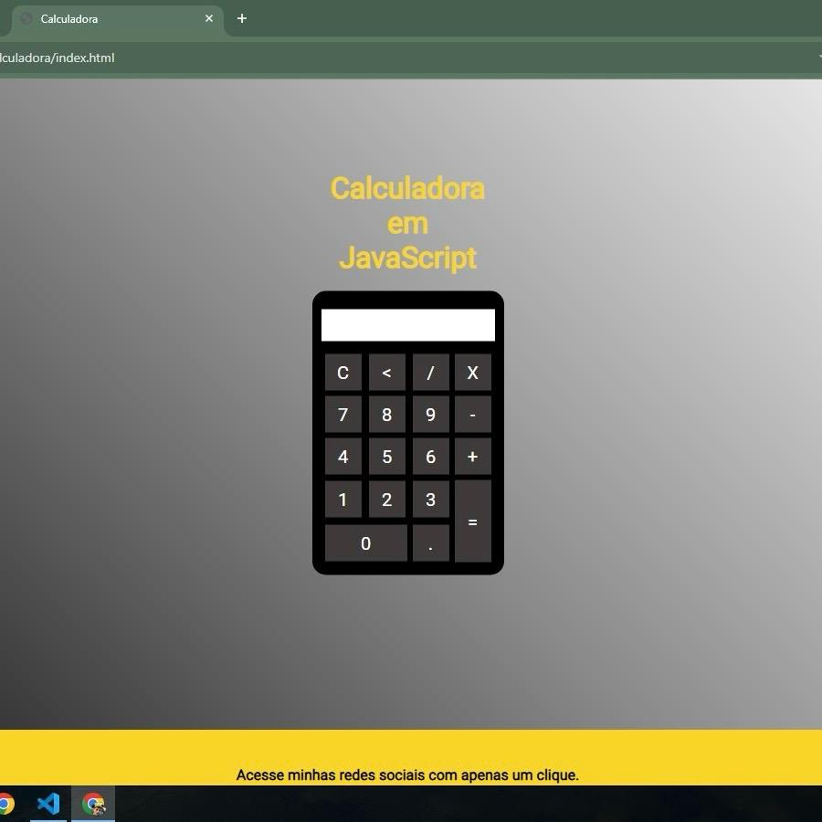

Meus Projetos
Última atualização em: 16/11/2023
PROJETO I - Site de Notícias
Simulação de site simples de notícias com tema de música, realizado em aula durante Curso Técnico em Informática no Colégio ULBRA São Lucas - Matéria de Introdução à Desenvolvimento WEB.
Confira em: https://kayblack.vercel.app/
Data de acréscimo: 13/11/2023
PROJETO II - Calculadora em JavaScript
Primeiro projeto utilizando a linguagem de programação JavaScript integrada ao HTML e CSS. Atividade realizada em aula durante Curso Técnico em Informática no Colégio ULBRA São Lucas - Matéria de Introdução à Desenvolvimento WEB.
Confira em: https://calculadora-tiagoroglio.vercel.app/

Data de acréscimo: 15/11/2023